Back Squat
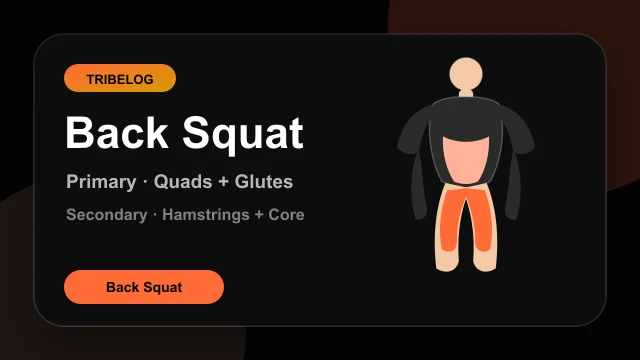
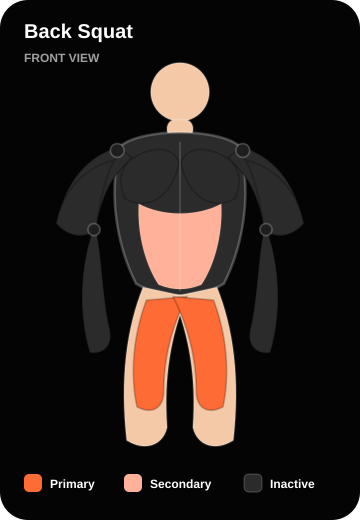
workouts/exercises/v1/back_squat/demo.lottie.jsonGoblet Squat
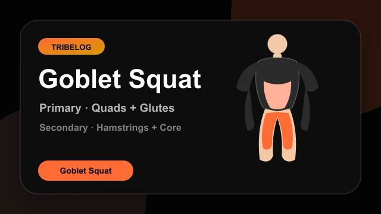
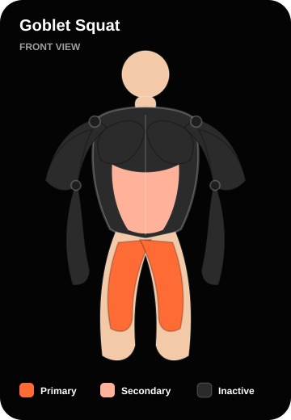
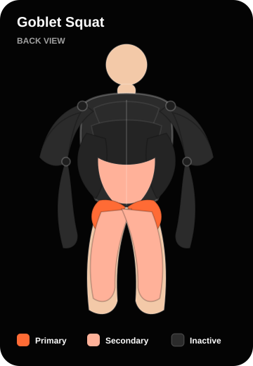
workouts/exercises/v1/goblet_squat/demo.lottie.jsonLeg Press
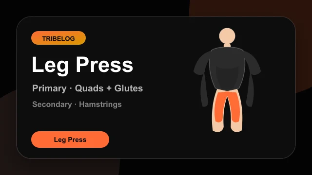
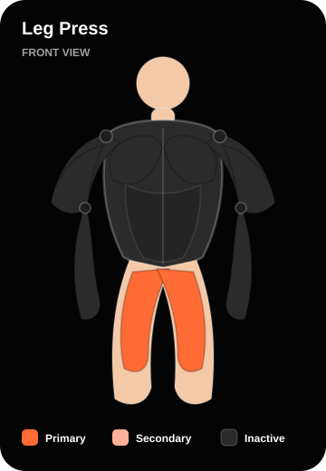
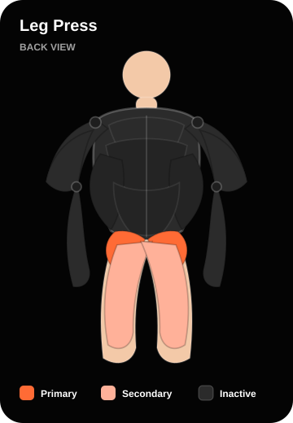
workouts/exercises/v1/leg_press/demo.lottie.jsonRomanian Deadlift
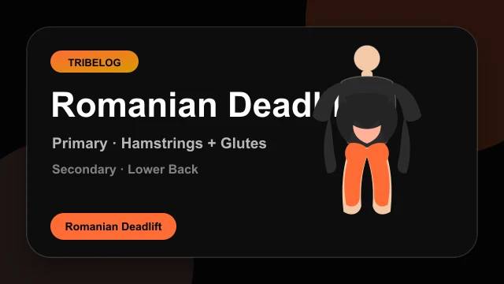
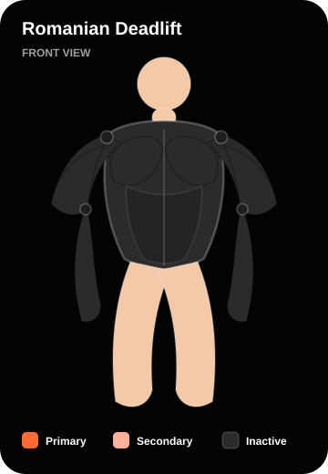
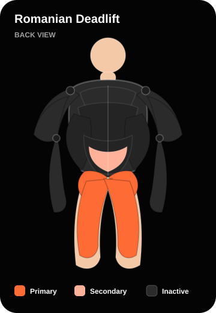
workouts/exercises/v1/romanian_deadlift/demo.lottie.jsonConventional Deadlift
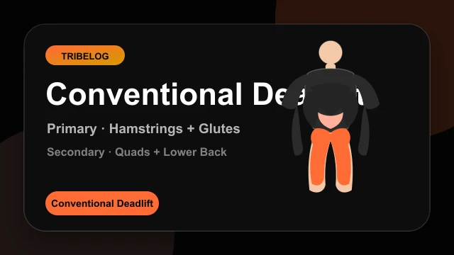
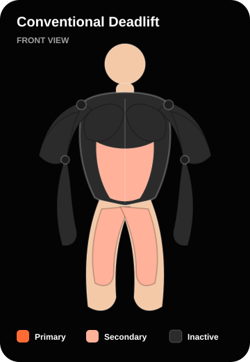
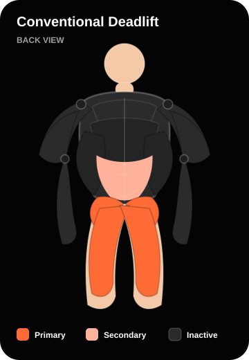
workouts/exercises/v1/conventional_deadlift/demo.lottie.jsonHip Thrust
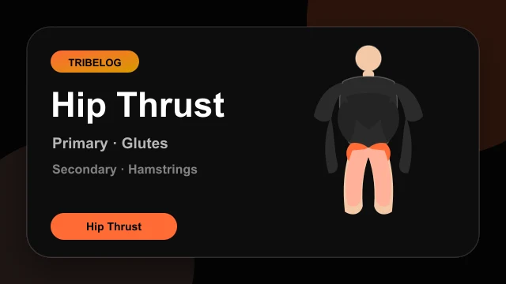
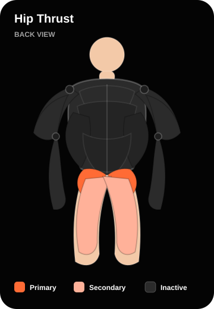
workouts/exercises/v1/hip_thrust/demo.lottie.jsonWalking Lunge
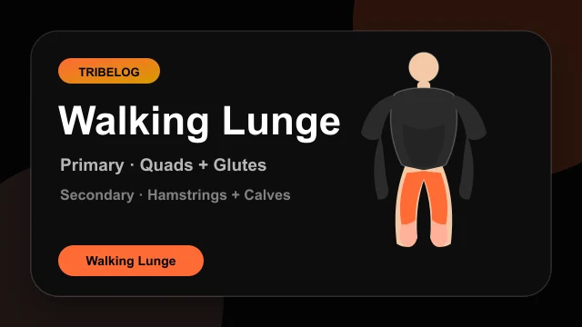
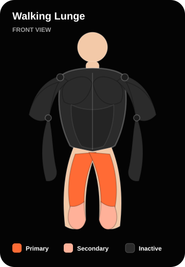
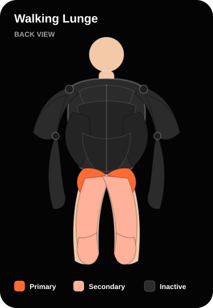
workouts/exercises/v1/walking_lunge/demo.lottie.jsonBulgarian Split Squat
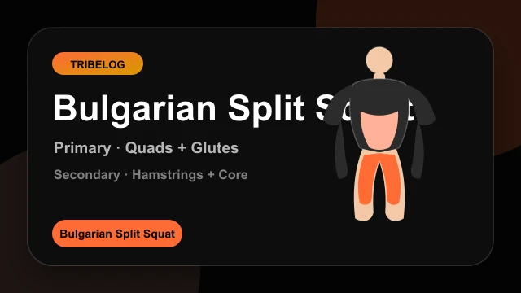
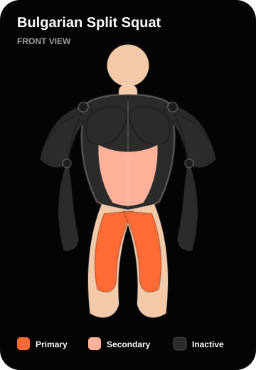
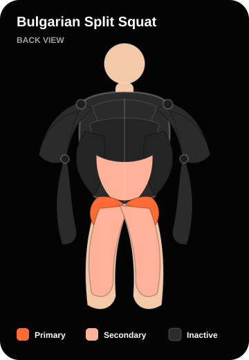
workouts/exercises/v1/bulgarian_split_squat/demo.lottie.jsonStep-Up
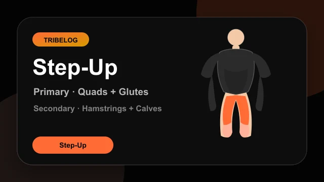
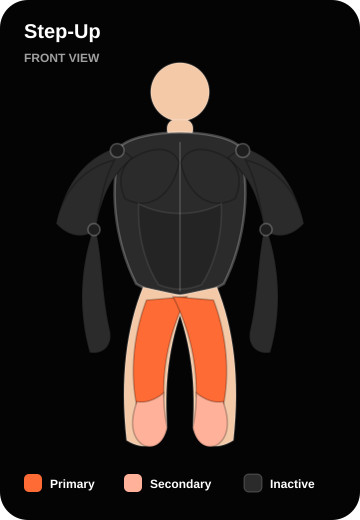
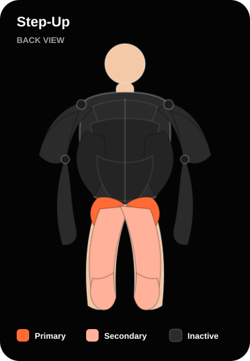
workouts/exercises/v1/step_up/demo.lottie.jsonLeg Extension
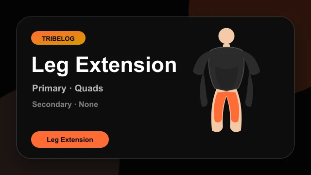
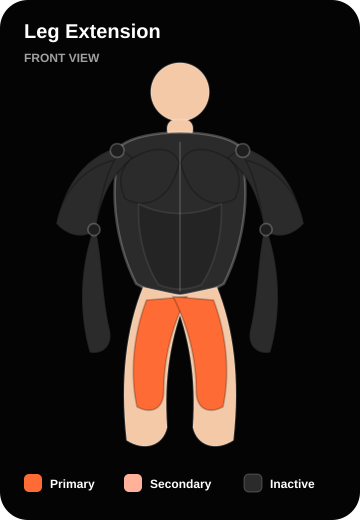
workouts/exercises/v1/leg_extension/demo.lottie.jsonSeated Leg Curl
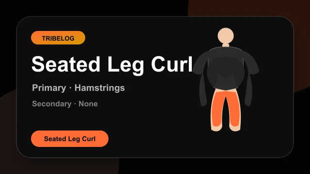
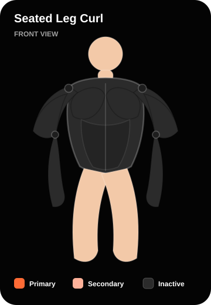
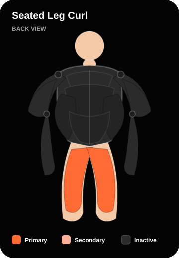
workouts/exercises/v1/seated_leg_curl/demo.lottie.jsonStanding Calf Raise
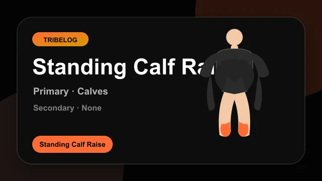
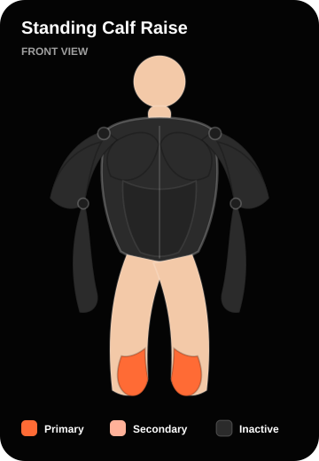
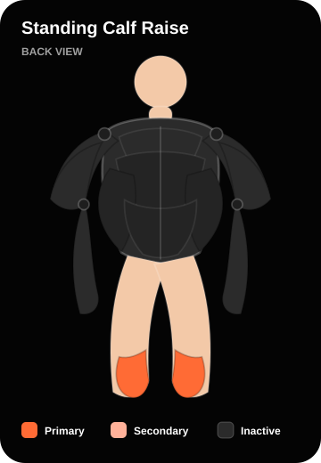
workouts/exercises/v1/standing_calf_raise/demo.lottie.jsonGlute Bridge
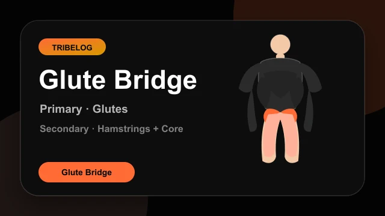
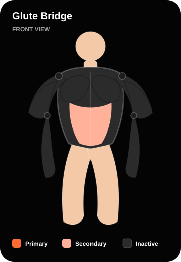
workouts/exercises/v1/glute_bridge/demo.lottie.jsonKettlebell Swing
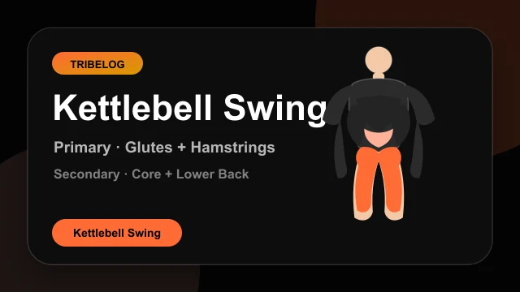
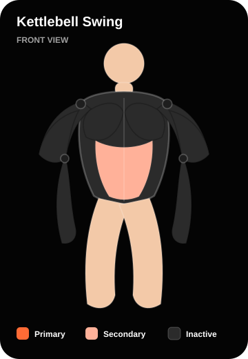
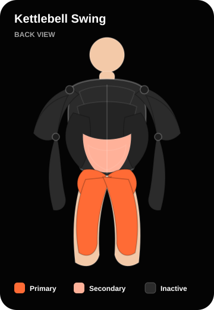
workouts/exercises/v1/kettlebell_swing/demo.lottie.json